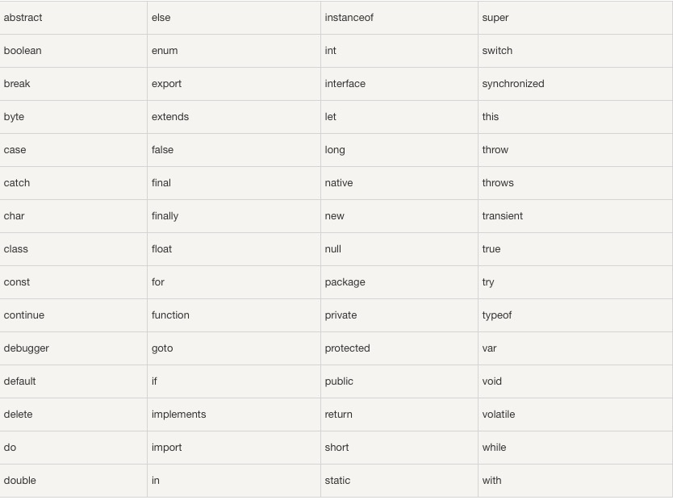

JavaScript 是一个程序语言。语法规则定义了语言结构。
JavaScript 是一个脚本语言。 它是一个轻量级，但功能强大的编程语言。
在编程语言中，一般固定值称为字面量，如 3.14。
数字（Number）字面量 可以是整数或者是小数，或者是科学计数(e)。
3.14
1001
123e5
字符串（String）字面量 可以使用单引号或双引号:
"John Doe"
'John Doe'
表达式字面量 用于计算：
5 + 6
5 * 10
数组（Array）字面量 定义一个数组：
[40, 100, 1, 5, 25, 10]
对象（Object）字面量 定义一个对象：
{firstName:"John", lastName:"Doe", age:50, eyeColor:"blue"}
函数（Function）字面量 定义一个函数：
function myFunction(a, b) { return a * b;}
在编程语言中，变量用于存储数据值。 JavaScript 使用关键字 var 来定义变量， 使用等号来为变量赋值： var x, length x = 5 length = 6 变量可以通过变量名访问。在指令式语言中，变量通常是可变的。字面量是一个恒定的值。
JavaScript使用 算术运算符 来计算值: (5 + 6) * 10 JavaScript使用赋值运算符给变量赋值： x = 5 y = 6 z = (x + y) * 10
JavaScript语言有多种类型的运算符：
| 类型 | 实例 | 描述 |
|---|---|---|
| 赋值，算术和位运算符 | = + - * / | 在 JS 运算符中描述 |
| 条件，比较及逻辑运算符 | == != < > | 在 JS 比较运算符中描述 |
在 HTML 中，JavaScript 语句向浏览器发出的命令。 语句是用分号分隔： x = 5 + 6; y = x * 10;
JavaScript 关键字用于标识要执行的操作。 和其他任何编程语言一样，JavaScript 保留了一些关键字为自己所用。 var 关键字告诉浏览器创建一个新的变量： var x = 5 + 6; var y = x * 10; JavaScript 同样保留了一些关键字，这些关键字在当前的语言版本中并没有使用，但在以后 JavaScript 扩展中会用到。 以下是 JavaScript 中最重要的保留字（按字母顺序）： 
不是所有的 JavaScript 语句都是"命令"。双斜杠 // 后的内容将会被浏览器忽略： // 我不会执行
JavaScript 有多种数据类型：数字，字符串，数组，对象等等：
var length = 16; // Number 通过数字字面量赋值
var points = x * 10; // Number 通过表达式字面量赋值
var lastName = "Johnson"; // String 通过字符串字面量赋值
var cars = ["Saab", "Volvo", "BMW"]; // Array 通过数组字面量赋值
var person = {firstName:"John", lastName:"Doe"}; // Object 通过对象字面量赋值
编程语言中，数据类型是一个非常重要的内容。 为了可以操作变量，了解数据类型的概念非常重要。 如果没有使用数据类型，以下实例将无法执行： 16 + "Volvo" 16 加上 "Volvo" 是如何计算呢? 以上会产生一个错误还是输出以下结果呢？ "16Volvo" 你可以在浏览器尝试执行以上代码查看效果。 在接下来的章节中你将学到更多关于数据类型的知识。
JavaScript 语句可以写在函数内，函数可以重复引用：
引用一个函数 = 调用函数(执行函数内的语句)。
function myFunction(a, b) {
return a * b; // 返回 a 乘以 b 的结果
}
JavaScript 对大小写是敏感的。 当编写 JavaScript 语句时，请留意是否关闭大小写切换键。 函数 getElementById 与 getElementbyID 是不同的。 同样，变量 myVariable 与 MyVariable 也是不同的。
JavaScript 使用 Unicode 字符集。 Unicode 覆盖了所有的字符，包含标点等字符。 如需进一步了解，请学习我们的 完整 Unicode 参考手册。